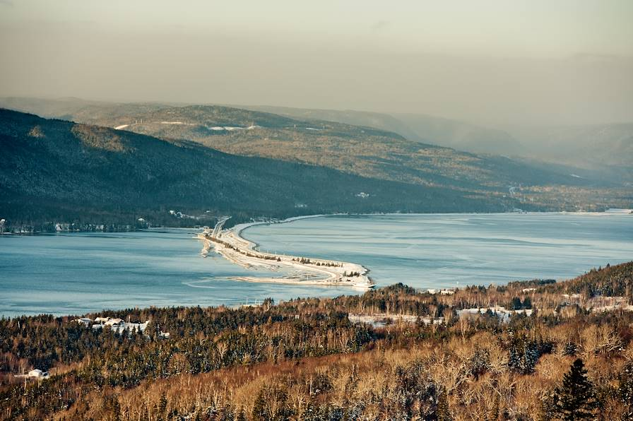
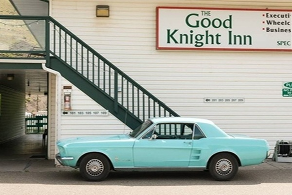
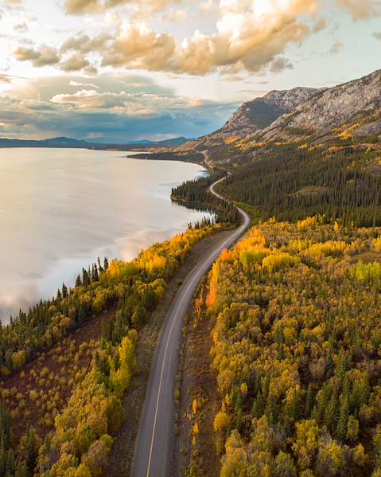
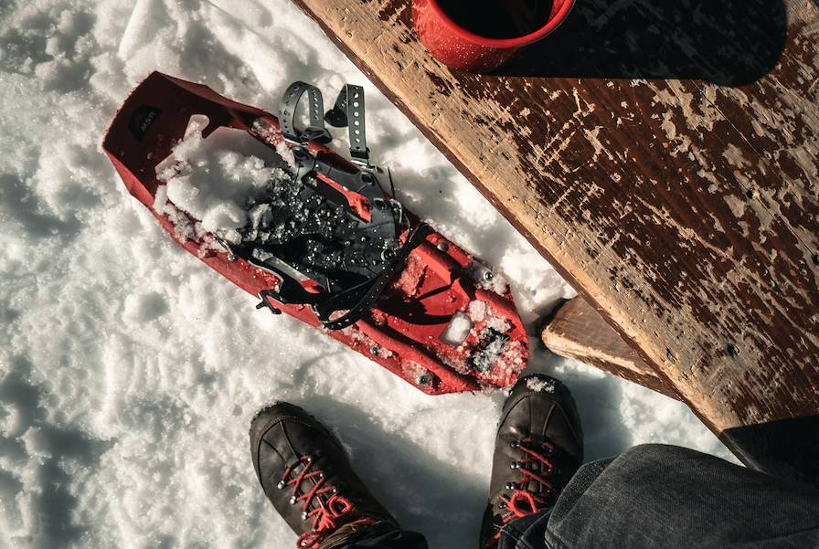
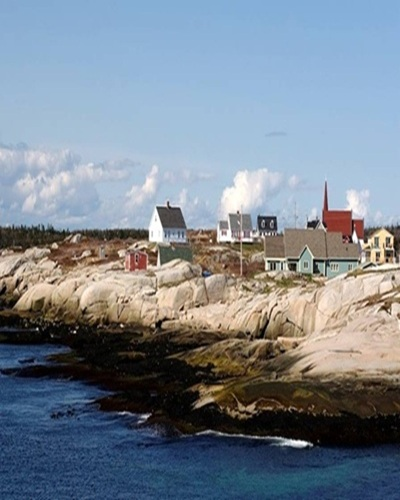
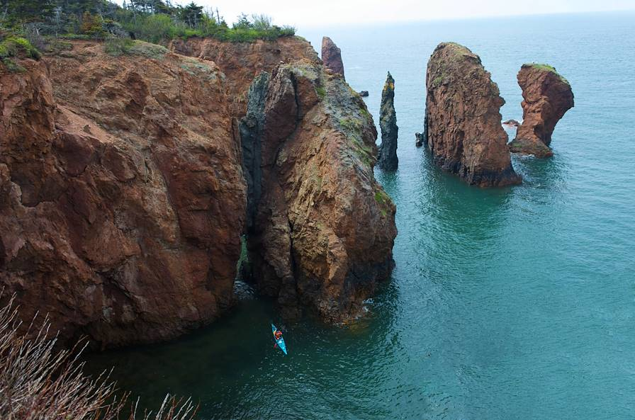
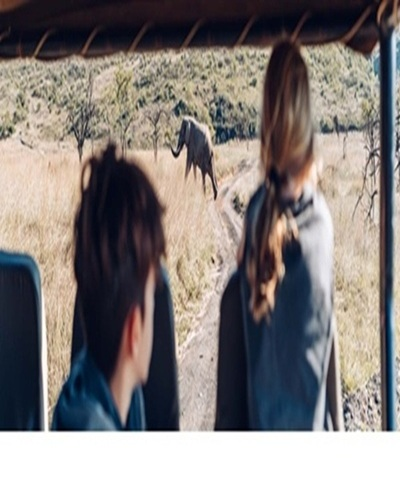

VOYAGE AU CANADA
Depuis 40 ans GodwinBryan Agence de voyage construit un univers totalement dédié au voyage individuel sur mesure. A deux, en famille, entre amis, au bord d’une plage paradisiaque ou loin des sentiers battus, votre voyage se pense et s’organise avec le spécialiste de la destination qui vous intéresse. Connaissant parfaitement le pays ou la zone car le plus souvent natif du pays d’origine, il vous suggèrera ce qui fera de votre projet un voyage unique.
Des idées de voyages au Canada
Puisez l’inspiration dans nos suggestions avant de personnaliser votre voyage

Sur les routes de Nouvelles-Écosse
Randonner et rouler dans une province élégante, nuancée, lestée d'histoire et baignée d'air.
20 jours, de 8000$ à 12000$

De Vancouver aux Rocheuses-L'Ouest canadien en train d'exception
Gagner les Rocheuses à bord d'un train panoramique; filer en liberté sur la route des glaciers.
10 jours, de 7500$ à 10000$

Du Pacifique aux Rockies-Family trip à travers l'Ouest canadien
Côte sauvage, lacs émeraude, montagnes vertigineuses et glaciers enneigés: un grand road-trip familial, de la Colombie-Britannique à l'Alberta.
17 jours, de 5600$ à 8500$

De Québec au Nouveau-Brunswick- À la rencontre de l'Acadie
De parcs naturels en villages côtiers, faire la rencontre d'une province aussi culturelle que maritime.
16 jours, de 4500$ à 5500$

Toronto, Niagara, lac Ontario-Road-trip sauvage et refuges au bord de l'eau
Sillonner l'Ontario, après Toronto et les chutes du Niagara, la nature pour seul horizon.
10 jours, de 4500$ à 6500$

Yukon et Alaska- Summertime sur la dernière frontière
Sillonner le Grand Nord américano-canadien, à travers des paysages purs à couper ls souffle.
05 jours, de 3000$ à 4500$

Passionnés de vie sauvage, il existe de nombreuses façons de voyager pour aller au contact de la faune et l'observer dans son milieu naturel. Bien sûr, le plus mythique reste le voyage d'observation des animaux au Canada lors de grands safaris dans les parcs nationaux.
01 jour, de 30$ à 100$